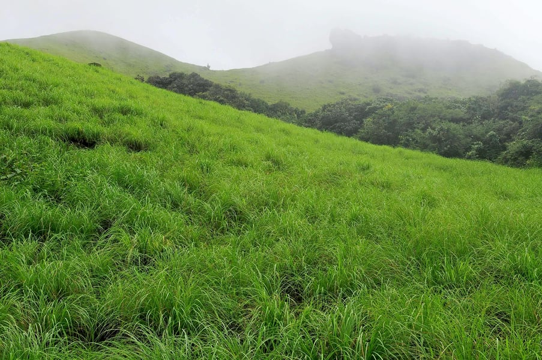
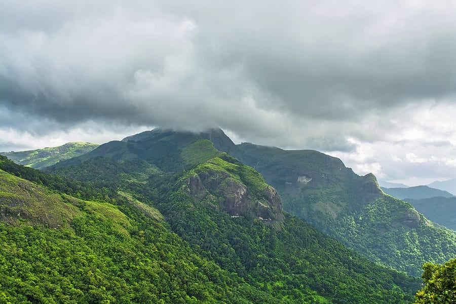

01.Bekal Fort

The 300 years old defensive mechanism which is the largest and well-preserved fort makes it one of the best Kasaragod tourist place. You can get an enthralling view of the mesmerizing Arabian sea from the fort’s observation tower which was once used to fire the cannons!
The impressive strength of the fort brings a herd of tourists to witness the glorious past and be awestruck. Visit an old mosque near this fort to dive deeper into history.
Location: A Half hour away south of Kasaragod at a distance of 16 kilometers, and exact address is Kasaragod Road, PO Bekal Fort, Beside Bekal Fort Railway Station Dist, Bekal, Kerala 671316
Timings: 8:00 am to 5:00 pm
Entry fee: The entrance fee is INR 5 per person for Indians and INR 100 for foreign nationals.
02.Ranipuram Hills

Previously known as Madathumala, situated 750 meters above sea level, this destination boasts of some of the marvelous trekking trails of about two and a half kilometers with a cave at the summit. If seeking leisure the greens of shola woods and monsoon forests have all their natural beauty to offer you.
A combination of both adventure and leisure marks this place to be counted as one of the considerable tourist places on Kasaragod. Be it an adventure folk or solace seeker, this is one destination for all kinds of travelers.
Location:55 kilometers away from Kasaragod.
Timings:This place can be visited anytime, and is open for all.
Entry fee: None.
03.Veeramala Hills

Hosting a Dutch fort since the 18th century this locale is appreciated for its architecture. Go hiking around this piece of sloped land to discover more vantage points that remain unexplored and click some royal posed photographs!
That being done opt to hike around and pay attention to the tales in the air. This slice of Kasargod, is a true haven for the nature lovers, as it owns a bag full of scenic wonders in its abode.
Location:10 kilometers away from Nileshwar.
Timings:This upland can be visited anytime, but it is advised to visit the hillock at the time of sunset or sunrise.
Entry fee: None.